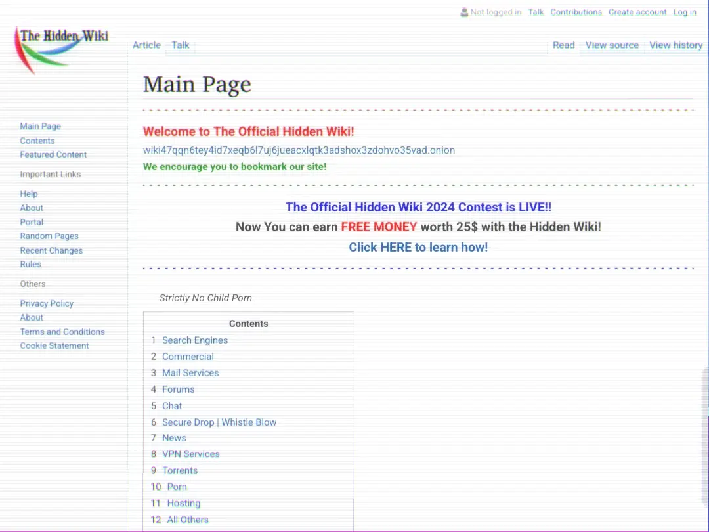

DARK-WEB SITES

1. THE HIDDEN WIKI
- The Hidden wiki is the oldest link directories on the dark web.Famous for all important .onion links.
THE ORIGINAL HIDDEN WIKI

The Hidden Wiki was a dark web MediaWiki wiki operating as a Tor hidden service that could be anonymously edited after registering on the site. The main page served as a directory of links to other .onion sites.
THE HIDDEN WIKI
THE HIDDEN WIKI - 2024
THE ULTIMATE HIDDEN WIKI
2. SOCIAL MEDIA & CHAT

3. READING MATERIALS

4. NEWS

5. MAILING SERVICES

6. HOSTING SERVICES